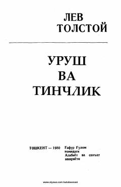

UV1812-yilgi urush voqealari va insonlar taqdiri aks etgan mashhur roman.
Lev Tolstoyning ushbu mashhur epopeya romanining uchinchi kitobida 1812-yildagi urush voqealari va fransuz qo'shinlarining Rossiyaga bostirib kirishi tasvirlanadi. Asarda tarixiy shaxslarning faoliyati, urush dahshatlari hamda qahramonlarning ruhiy va ma'naviy izlanishlari aks ettirilgan.